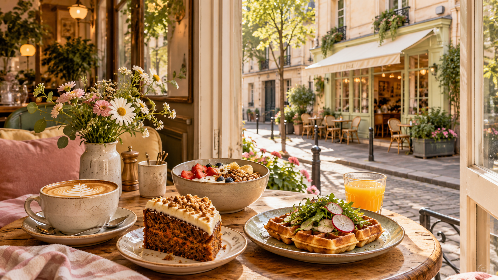

Gaufre du jour
Une base croustillante et une garniture de saison.
Du café bien fait, une cuisine généreuse et une lumière douce pour commencer la journée du bon côté.
Voir les envies du jour
Câlin Matin imagine le brunch comme une pause simple, colorée et réconfortante.
On vient pour un cappuccino, on reste pour une assiette maison, un scone encore tiède ou une part de gâteau. Ici, la matinée peut durer aussi longtemps qu’on veut.